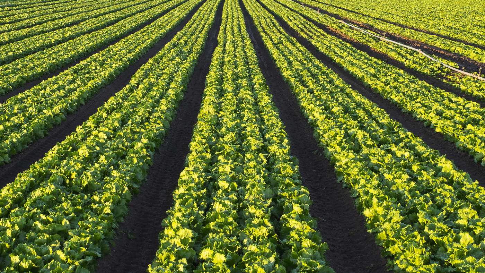
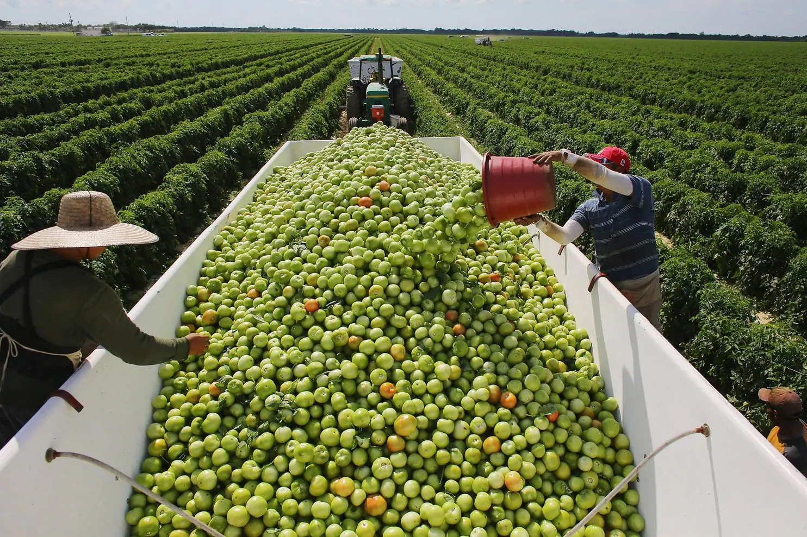
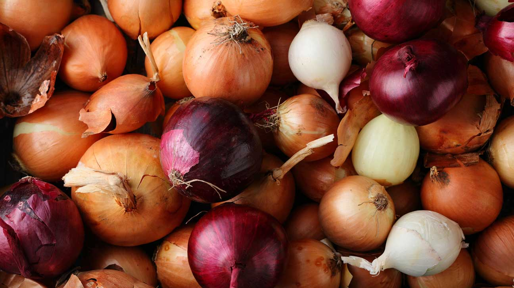
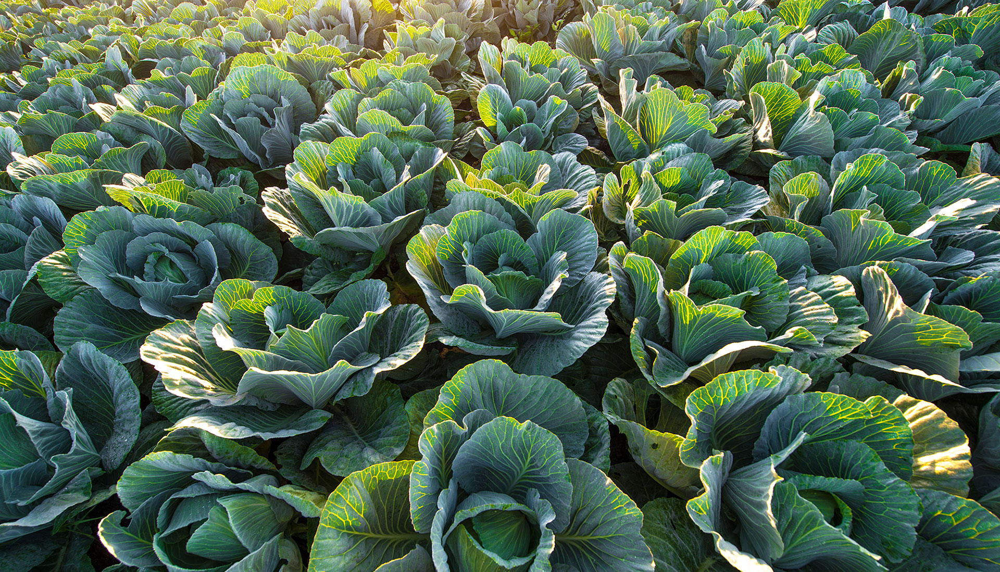

Our Vegetables
At SimpleSalad, we believe you deserve only the freshest vegetables in your bowls.
This is why we are comitted to making every salad bowl with the highest quality
produce,
giving you the quality that you deserve.

Arguably the most important ingredient in every salad, we ensure
the perfect crispiness in every bowl by carefully picking the
best lettuce from our producers in Gila River Valley, Arizona.
A salad isn't a salad without tomatoes, right? That's why we use
only the freshest tomatoes encountered in Northern Florida, to
ensure every bowl has the perfect flavor.


Who doesn't love a bit of crunch in their salad? From Treasure Valley,
Idaho, we select the crunchiest onions to give you the perfect texture
in every bowl.
We guarantee the perfect balance in our salads by using only the
highest quality cabbage, straight from Outagamie County, Wisconsin,
to your bowl.
